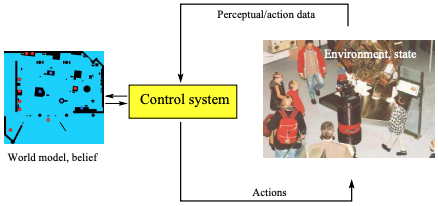
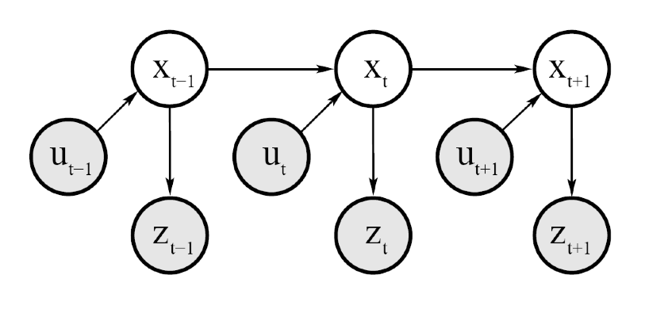
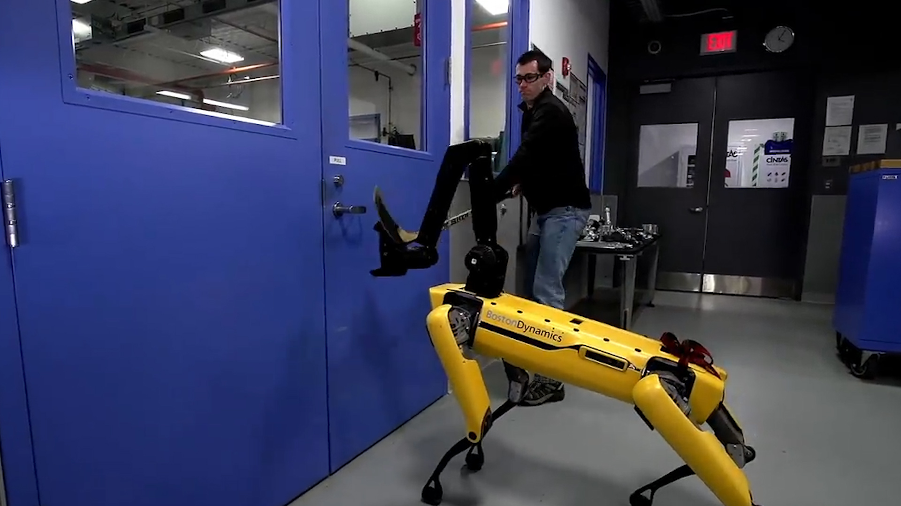

Recursive State Estimation
Contents
Recursive State Estimation¶
In [Inference in Graphical Models section]() we have seen how sequential data belonging to just two evidential variables (captured via \(p(x,y)\)) can be treated by probabilistic models to infer (reason) about values of the posterior. Now we will expand on two fronts:
Introduce the concept of state \(s\) that encapsulates multiple random variables and consider dynamical systems with non-trivial non-linear dynamics (state transition models) common in robotics and many other fields.
Introduce the time index \(t\) explicitly in the aforementioned state evolution as represented via a graphical model.
The perception subsystem, that processes sensor data produces noisy estimates (object detections etc.) - these can be attributed to the algorithmic elements of the subsystem or to imperfections in the sensors themselves. The model that captures the perception pipeline from sensors to estimates will be called measurement model or sensor model. So in summary we have two abstractions / models that we need to be concerned about: the transition model of the environment state and the sensor model.
Such expansion, will allow us to form using the Bayes rule, perhaps one of the most important contributions to the probabilistic modeling of dynamical systems: the recursive state estimator also known as Bayes filter that affords the agent the ability to maintain an internal belief of the current state of the environment.
Bayes Filter¶
We are introducing this algorithm, by considering a embodied agent (a robot) that moves in an environment.
 Agent belief and environment interactions
The state of such environment contain variables that capture dynamics such as pose (6D) that includes location and orientation, agent velocity, other objects poses, etc., as well as static state variables such as location of obstacles, walls etc. Most practical algorithms for state estimation assume that the stochastically evolving environment is not affected from state variables prior to \(s_t\).
This is the Markovian assumption and is key in making such algorithms tractable. Note that the assumption does not constraint the actual time internal that it is impactful for the future as we are free to define anyway we want the state \(s_t\). It may for example use a super-state that consists of two states in corresponding time intervals \(s_t=[s_{t-1}, s_t]\). We call this the Markov order - in this case the order is two. In the figure below you can see the PGM that corresponds to the Markov assumption.
 Dynamic Bayesian Network that characterizes the Markov evolution of states, measurements and controls - in the text we use for states the letter \(s\) instead of \(x\) and for actions the letter \(a\) instead of \(u\).
The above graph decomposes as follows:
In the following we will use \(z_{t_1:t_2}\) to represent sensing estimates of the perception subsystem acquired between \(t_1\) and \(t_2\).
The measurement or sensor model is given by the conditional probability distribution \(p(z_t|s_t)\). Note a couple of important points: as measurements arrive over time, the knowledge of the agent increases and there may not be dependency on time for the measurement model.
We will also use the conditional probability to represent the state transition model \(p(s_t | s_{t-1}, a_t)\) where \(a_t\) is the control action variable that the agent executes causing a state change in the environment. By convention, we execute first a control action \(a_1\) and then measure \(z_1\).
The belief is the posterior distribution over the state \(s_t\) conditioned on all past measurements and actions.
It would also be useful to define the belief just after we took action \(a_t\) but before considering the measurement \(z_t\)
The Bayes filter is a recursive algorithm that involves two steps:
(a) the prediction step that estimates the belief \(\mathtt{\hat{bel}}(s_t)\) from the belief of the previous recursion \(\mathtt{bel}(s_{t-1})\)
(b) the measurement update step that that weighs the belief \(\mathtt{\hat{bel}}(s_t)\) with the probability that measurement \(z_t\) was observed.
Bayes Filter
\(\mathtt{bel}(s_t)\) = bayes_filter(\(\mathtt{bel}(s_{t-1}), a_t, z_t)\)
for all \(s_t\) do:
\(→ \mathtt{\hat{bel}}(s_t) = \int p(s_t | a_t, s_{t-1}) \mathtt{bel}(s_{t-1}) ds_{t-1}\) (prediction)
\(→ \mathtt{bel}(s_t) = \eta p(z_t | s_t) \mathtt{\hat{bel}}(s_t)\) (measurement update)
endfor
To illustrate how the Bayes filter is useful, lets look at a practical example. This example was borrowed from Sebastian Thrun’s book, “Probabilistic Robotics”, MIT Press, 2006.
Door state estimation¶
The problem we are considering is estimating the state of a door using an agent (robot) equipped with a monocular camera.

For simplicity lets assume that the door can be in any of two possible states (open or closed) and that the agent does not know the initial state of the door. Therefore initially, its beliefs are:
Measurement Model¶
No real agent has ideal sensing abilities so the sensor or measurement model is noisy and lets assume for simplicity that its given by:
Description |
Probabilistic Model |
|---|---|
if its open, agent can sense it as such with prob 60% |
\(p(z_t = sense-open | s_t = open) = 0.6\) |
if its closed, agent can sense it as such with prob 40% |
\(p(z_t = sense-closed | s_t = open) = 0.4\) |
if its closed, agent senses it open with prob 20% |
\(p(z_t = sense-open | s_t = closed) = 0.2\) |
if its closed, agent can sense it as such with prob 80% |
\(p(z_t = sense-closed | s_t = closed) = 0.8\) |
The values in the measurement model above are not necessarily chosen randomly as computer vision algorithms (or LIDAR) may find it easier to detect a closed door from an open door, since with an open door the camera sees the clutter inside the room and the LIDAR may confuse the clutter returns with a closed door.
Transition Model¶
Lets also assume that the agent is using a arm manipulator to push the door open if its closed. Note So we have the following transition distribution:
Transition description |
Probabilistic Finite State Machine |
|---|---|
if its open, a push leaves it open |
\(p(s_t = \mathtt{open} | a_t=\mathtt{push}, s_{t-1} = \mathtt{open}) = 1\) |
if its open, a push does not close it |
\(p(s_t = \mathtt{closed} | a_t= \mathtt{push}, s_{t-1} = \mathtt{open}) = 0\) |
if its closed, a push opens it with probability 80% |
\(p(s_t = \mathtt{open} | a_t=\mathtt{push}, s_{t-1} = \mathtt{closed}) = 0.8\) |
if its closed, a push leaves it closed with probability 20% |
\(p(s_t = \mathtt{closed} | a_t=\mathtt{push}, s_{t-1} = \mathtt{closed}) = 0.2\) |
if its open, doing nothing leaves it open |
\(p(s_t = \mathtt{open} | a_t=\mathtt{inaction}, s_{t-1} = \mathtt{open}) = 1\) |
if its open, doing nothing does not close it |
\(p(s_t = \mathtt{closed} | a_t = \mathtt{inaction}, s_{t-1} = \mathtt{open}) = 0\) |
if its closed, doing nothing does not open it |
\(p(s_t = \mathtt{open} | a_t=\mathtt{inaction}, s_{t-1} = \mathtt{closed}) = 0\) |
if its closed, doing nothing leaves it closed |
\(p(s_t = \mathtt{closed} | a_t= \mathtt{inaction}, s_{t-1} =\mathtt{closed}) = 1\) |
As we mentioned before, by convention the agent first acts and then senses. If you reverse sensing and action you arrive in the same equations with just some index differences.
Lets assume that at \(t=1\), the agent takes no action but senses the door is open. The two steps of RSE are as follows:
Recursive State Estimation at \(t=1\) - Step 1: Prediction¶
For all possible values of the state variable \(s_1\) we have
The fact that the belief at this point equals the prior belief (stored in the agent) is explained from the fact that inaction shouldn’t change the environment state and the environment state does not change itself over time in this specific case.
Recursive State Estimation at \(t=1\) - Step 2: Measurement Update¶
In this step we are using the perception subsystem to adjust the belief with what it is telling us:
For the two possible states at \(t=1\) we have
The normalizing \(\eta\) factor can now be calculated: \(\eta = 1/(0.3 + 0.1) = 2.5\).
Therefore:
In the next time step lets assume that the agent pushes the door and senses that its open. Its easy to verify that
where \(\eta = (0.01 + 0.57)^{-1}\)
This example, although simplistic is indicative of the ability of the Bayes filter to incorporate perception and action into one framework. Although the example was for an embodied agent with a manipulator, the notion of action is optional. Beliefs can be recursively updated even if the action is not taken explicitly by the agent. Your cell phones have the ability to localize themselves using exactly the same Bayesian filter with different sensing (RF signals) despite the fact that they don’t move by themselves but are carried by you in their environment.